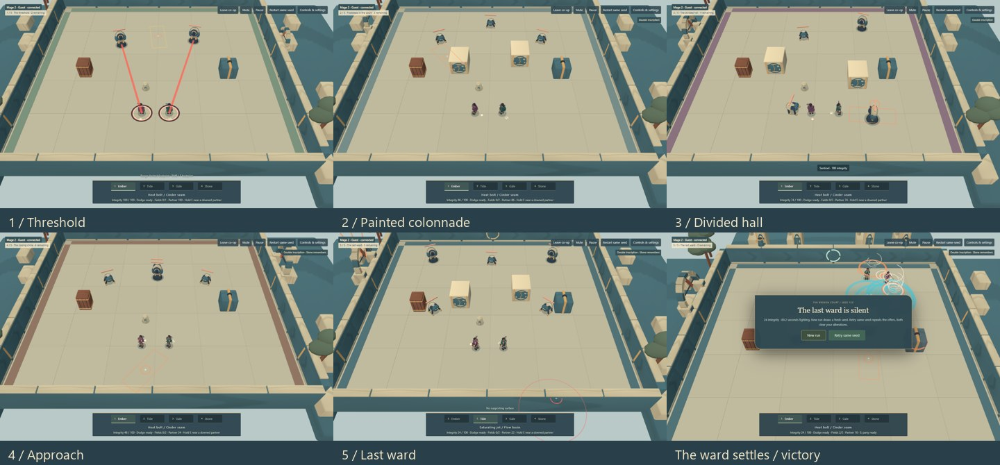

RUINWEAVERS
Through the Broken Court
Play solo or create / join co-op
Historical illustrated-run capture: five connected encounters, two personal alteration choices, one final ward. The current run has three build choices; see the current three-build comparison. New run draws a fresh seed; Retry same seed repeats its offers given the same choices.
Build dd2cd72b56d4. Actual two-client local WebRTC gameplay. Normal health and active enemies; scripted choices executed through real keyboard/mouse inputs. Lightweight, native Chrome / Intel UHD on one Windows computer. Video recording affects frame timings; performance was measured separately. No concept images.

WASD move · pointer aim · hold LMB/J Primary · RMB/F/K Secondary · 1–4 or Tab/Q select · Space dodge · E continue/revive.
Create co-op, copy the room code, partner joins, both Ready. Controls and settings include Standard/Lightweight and the preserved development comparisons.